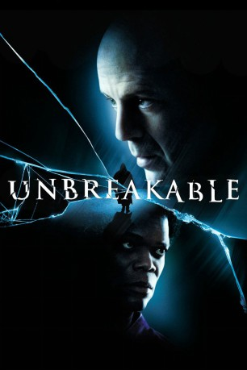
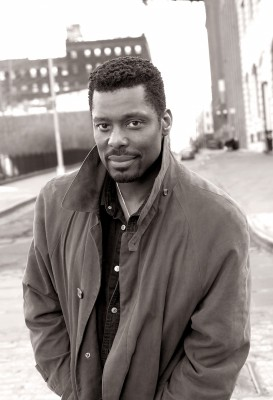
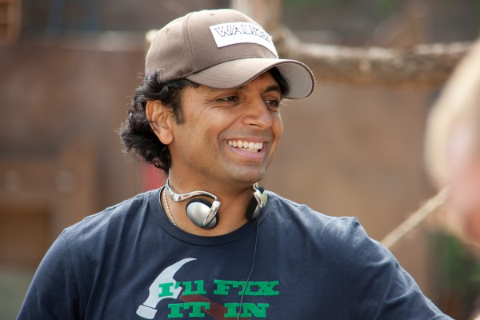
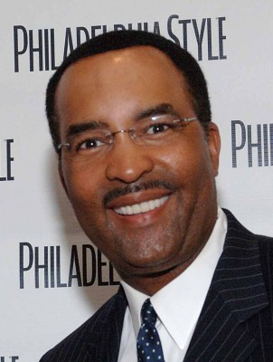
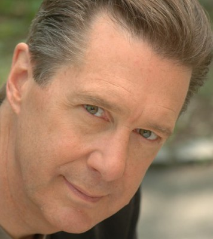
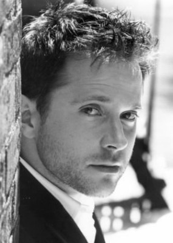
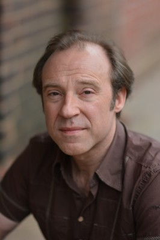
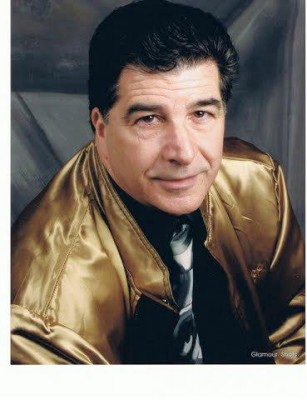

#2271 Unbreakable - Unzerbrechlich
Alternativ: Unbreakable
 
 IMDB-Wertung: 7.3 / 10
IMDB-Wertung: 7.3 / 10  Metascore: 62
Metascore: 62 
Ein verheerender Zugunfall vor den Toren von Philadelphia. 131 Tote. Nur ein Mann hat die Katastrophe überlebt ... völlig unverletzt, ganz ohne Schrammen. Hatte David Dunn nur Glück? Oder gibt es einen tieferen Grund für sein Überleben? Er hat keine Antworten auf seine Fragen. Doch dann tritt Elijah Price in sein Leben. Er behauptet, David Dunn sei unzerbrechlich und er wüsste, warum...
Jahr: 2000
Dauer: 106 Minuten
FSK: 16
Land: USA Studio: Buena Vista PicturesTonspuren:
Untertitel: Deutsch,
Auflösung: 1080p (1920x816) Größe: 5273 MB
Genre: Thriller, Drama, Sci-Fi, Mystery
Regisseur:  M. Night Shyamalan
M. Night Shyamalan
Drehbuch: M. Night Shyamalan
Soundtrack: James Newton Howard
Darsteller:
 Bruce Willis als David Dunn
Bruce Willis als David Dunn Samuel L. Jackson als Elijah Price
Samuel L. Jackson als Elijah Price Robin Wright als Audrey Dunn
Robin Wright als Audrey Dunn- Spencer Treat Clark als Joseph Dunn
- Charlayne Woodard als Elijah's Mother
-  Eamonn Walker als Dr. Mathison
- Leslie Stefanson als Kelly
- Michaelia Carroll als Babysitter
- Bostin Christopher als Comic Book Clerk
- Davis Duffield als David Dunn Age 20
- Laura Regan als Audrey Inverso Age 20
- Chance Kelly als Orange Suit Man
 Michael Kelly als ER Doctor
Michael Kelly als ER Doctor- Firdous Bamji als Businessman
 James Handy als Priest
James Handy als Priest- Richard Council als Noel
 Damian Young als Green Army-Jacketed Man
Damian Young als Green Army-Jacketed Man- Sherman Roberts als Physician
-  M. Night Shyamalan als Stadium Drug Dealer
- Sasha Neulinger als Thermometer Boy
-  Ukee Washington als Radio Announcer
- Susan Wilder als Shoplifter
- Greg Horos als Slicked-Hair Man
- Todd Berry als Frat Party Boy
- Angela Eckert als Frat Party Girl
- Julia Yorks als Hostage Girl
 John Patrick Amedori als Hostage Boy
John Patrick Amedori als Hostage Boy- John Rusk als Security Dispatcher
- Kim Simms Thomas als Hostage Woman
 Andrea Havens als Hospital Administrator
Andrea Havens als Hospital Administrator- Gina Allegro als Fan , uncredited
- Anthony Bosco als Stadium Security Guard , uncredited
-  Bob Bowersox als Art Patron , uncredited
- Chrismandu als Bookie , uncredited
- Antonio Costa als Subway Passenger , uncredited
 Jaime Gallagher als Train Passenger , uncredited
Jaime Gallagher als Train Passenger , uncredited Jennifer Hale als Ima Goodelady / Sedussa , uncredited
Jennifer Hale als Ima Goodelady / Sedussa , uncredited- Natalie Hultman als Extra , uncredited
 Rick Kain als Grounds Keeper , uncredited
Rick Kain als Grounds Keeper , uncredited- Mark Kratzer als ER Nurse , uncredited
- Bryce Lenon als Peppie Drug Dealer , uncredited
-  Sean Oliver als Police Officer , uncredited
- Joey Perillo als Jenkins , uncredited
-  Wayne Pyle als News Reporter , uncredited
-  Vincent Riviezzo als Businessman , uncredited
- David C. Roehm Sr. als Penn Alumni , uncredited
- Jonathan Sachar als Young Father , uncredited
- Rita Soto als Subway Rider , uncredited
- Sonya Wallace als Subway Passenger , uncredited
- Johnny Hiram Jamison als Elijah Age 13
Datei: X:\3-Trilogie(A-F)\Eastrail 177 Universe\Unbreakable - Unzerbrechlich (2000, FSK16, 1920x816).mkv seit 25.10.2015
Festplatte: HD Collection-2(A-Z)-3(A-M)
 Alle Filme aus Gruppe '3-Trilogie(A-F)\Eastrail 177 Universe'
Alle Filme aus Gruppe '3-Trilogie(A-F)\Eastrail 177 Universe'
- Glass
- Split
- Unbreakable - Unzerbrechlich (der aktuelle Film)